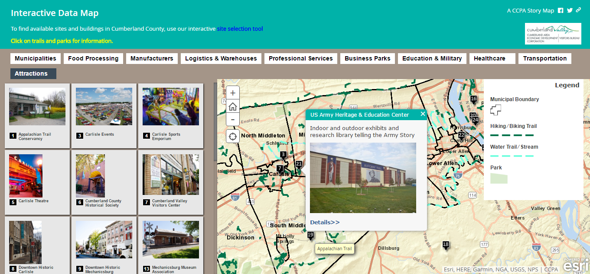
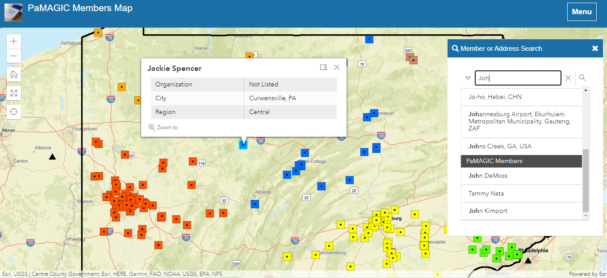

Maps for the Web
CAEDC Interactive Data Map
The Interactive Data Map was developed for the Cumberland County Economic Development Corporation to promote the County to prospective businesses. It features a custom deployment of the Esri Shortlist Storytelling web map application.
Cumberland County Recycling & Disposal Map

This web map application was developed using Leaflet.js to assist residents of Cumberland County learn about solid waste disposal and recycling in ther municipality. The map's theme is based upon the BootLeaf project.
PAMAGIC Members Map
This interactive web map showcases members of the Pennsylvania Mapping and Geographic Consortium. It was built using Leaflet.js and the Esri Calcite Maps theme.